L'anniversaire de Paolo
Le mois dernier, Paolo (fêter) a fêté ses huit ans au bord de la mer. Il (faire) faisait très beau et l'eau (être) était calme comme une piscine. Le matin, nous (se baigner) nous sommes baignés tous ensemble. L'après-midi, Paolo (choisir) a choisi un grand gâteau au chocolat et ses copains (partager) ont partagé les bonbons. Moi, j'(dessiner) ai dessiné un bateau sur la carte d'anniversaire. Le soir, nous (aller) sommes allés au port pour voir le coucher du soleil. Aujourd'hui, Paolo (se souvenir) se souvient encore de cette journée. L'année prochaine, nous (aller) allons fêter ses neuf ans à Paris, au musée d'Orsay !
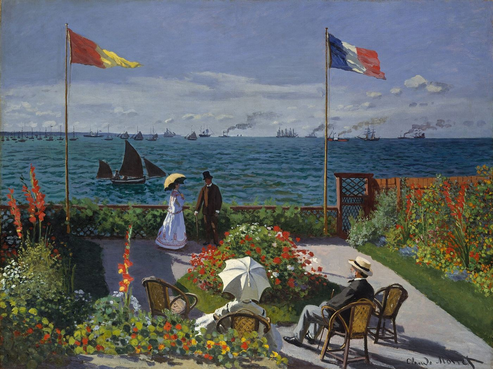
POUR ANNA MARIA
Vocabulaire, expressions et grammaire9 novembre 2026
Claude Monet, Jardin à Sainte-Adresse, 1867 · The Metropolitan Museum of Art, New York
Bonjour Annamaria !
Aujourd'hui, nous voyageons entre la mer, les musées et les impressionnistes. Tu découvres le vocabulaire des vacances, des fêtes et des loisirs, le son [o], et sept petits points de grammaire. Ensuite, six exercices pour tout mettre en pratique.
Oggi viaggiamo tra il mare, i musei e gli impressionisti. Scopri il vocabolario delle vacanze, delle feste e del tempo libero, il suono [o] e sette piccoli punti di grammatica. Poi sei esercizi per mettere tutto in pratica.
▶ Chaque phrase et chaque explication a son audio. Écoute et répète.
Ogni frase e ogni spiegazione ha il suo audio. Ascolta e ripeti.
IT : la traduction italienne. Essaie d'abord sans !
La traduzione italiana. Prova prima senza!
🎨 Retourne les cartes du vocabulaire, comme des tableaux dans un musée.
Gira le carte del vocabolario, come quadri in un museo.
★ Tes erreurs vont dans « À revoir », à la fin, avec un lien vers la règle.
I tuoi errori vanno in «À revoir», alla fine, con un link alla regola.
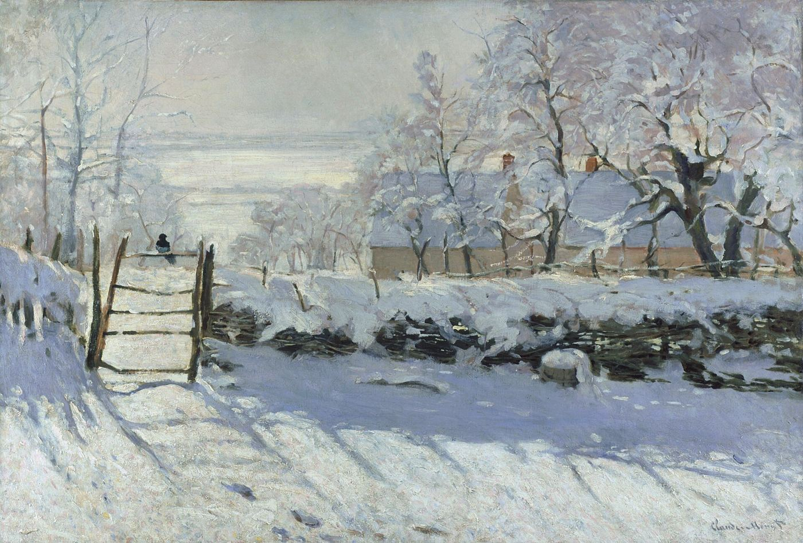
Claude Monet, La Pie, 1868-1869 · Musée d'Orsay, Paris
1
Le vocabulaire
Il vocabolario
Lis le mot ou l'expression, essaie de deviner le sens, puis retourne la carte : tu trouves la traduction, des exemples et une petite remarque.
Leggi la parola o l'espressione, prova a indovinarne il significato, poi gira la carta: trovi la traduzione, degli esempi e una piccola nota.
Voyages, mer et vacances Viaggi, mare e vacanze
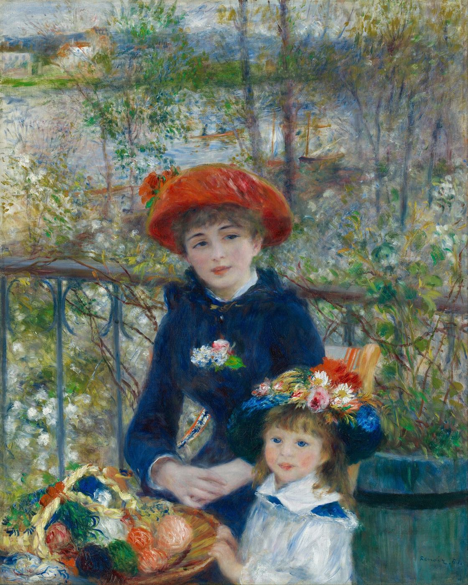
expression
être de la même famille
Clique pour retourner la carte
Auguste Renoir, Deux Sœurs (Sur la terrasse), 1881
être de la même famille
far parte della stessa famiglia
Ces deux tableaux sont de la même famille : ce sont des impressionnistes.
Questi due quadri sono della stessa famiglia: sono impressionisti.
« Peindre » et « peinture » sont des mots de la même famille.
«Peindre» e «peinture» sono parole della stessa famiglia.
On l'utilise pour des personnes et aussi pour des mots qui ont la même racine.
Si usa per le persone e anche per le parole con la stessa radice.
comparaison
comme une piscine
Clique pour retourner la carte
La mer, l'été
comme une piscine
come una piscina
La mer était calme, comme une piscine.
Il mare era calmo, come una piscina.
L'eau était chaude comme un bain.
L'acqua era calda come un bagno.
comme + nom sert à comparer : il est fort comme un cheval.
«comme» + nome serve a paragonare.
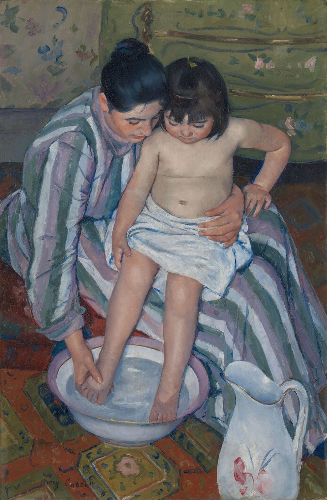
verbe pronominal
se baigner
Clique pour retourner la carte
Mary Cassatt, Le Bain, 1893
se baigner
fare il bagno (in mare, in piscina)
Paolo s'est baigné toute la journée.
Paolo ha fatto il bagno tutto il giorno.
On ne peut pas se baigner ici : c'est interdit.
Qui non si può fare il bagno: è vietato.
Au passé composé avec être : je me suis baignée. Prendre un bain = dans la baignoire.
Al passato prossimo con «être». «Prendre un bain» = nella vasca.
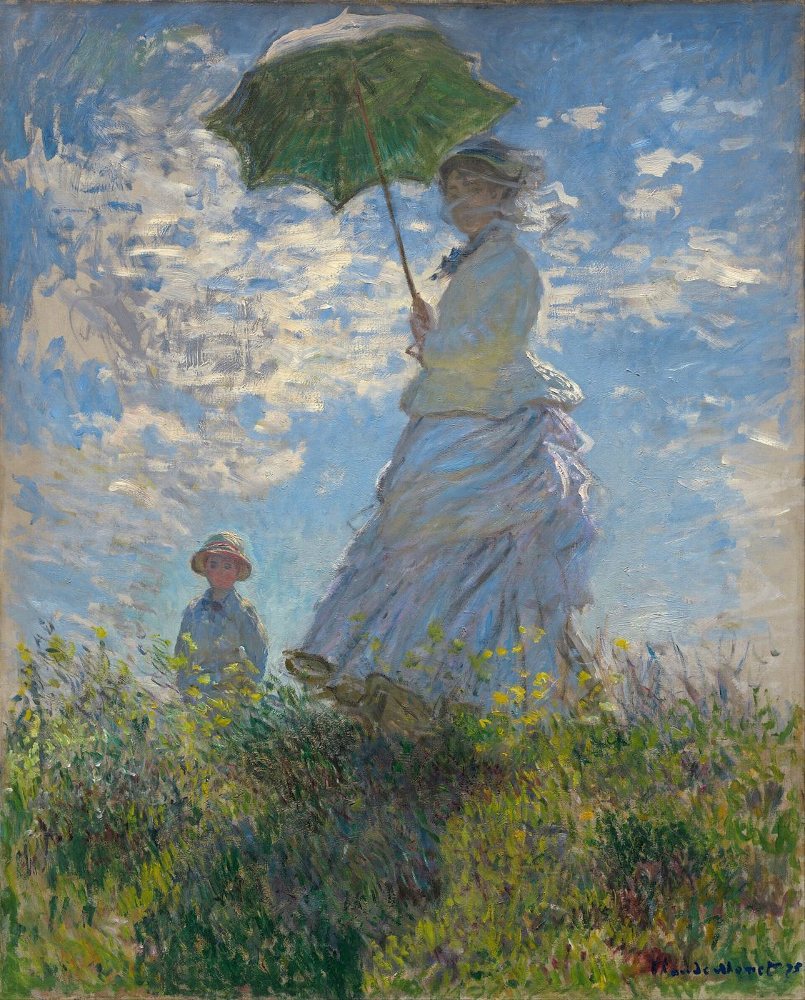
pour + infinitif
pour voir
Clique pour retourner la carte
Claude Monet, La Promenade, la femme à l'ombrelle, 1875
pour voir
per vedere · tanto per vedere
Nous sommes allés à Giverny pour voir les jardins de Monet.
Siamo andati a Giverny per vedere i giardini di Monet.
Goûte, pour voir !
Assaggia, tanto per vedere!
pour + infinitif exprime le but. Seul, pour voir veut dire aussi « pour essayer ».
«pour» + infinito esprime lo scopo. Da solo, «pour voir» significa anche «per provare».
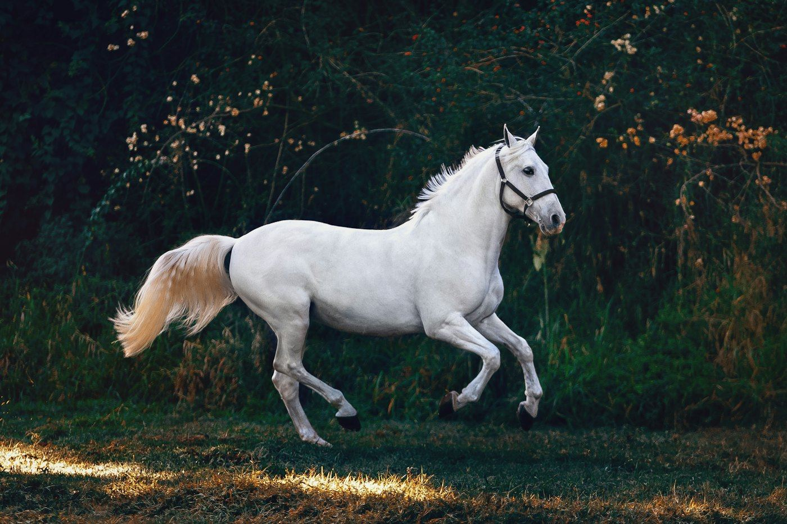
nom féminin
une randonnée
Clique pour retourner la carte
Une randonnée à cheval
une randonnée
un'escursione, una camminata
Nous avons fait une randonnée à cheval au bord de la mer.
Abbiamo fatto un'escursione a cavallo in riva al mare.
La randonnée dure trois heures.
L'escursione dura tre ore.
On fait une randonnée à pied, à cheval ou à vélo.
Si fa un'escursione a piedi, a cavallo o in bicicletta.
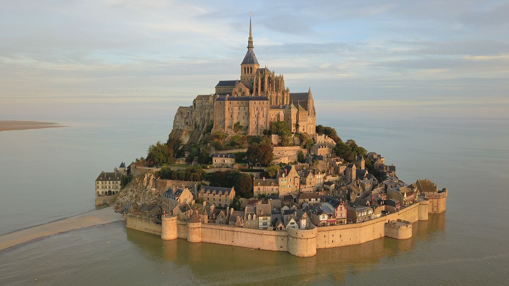
nom masculin
un accueil · l'accueil
Clique pour retourner la carte
Le Mont-Saint-Michel, en Normandie
un accueil · l'accueil
un'accoglienza · la reception
Nous avons reçu un accueil très chaleureux.
Abbiamo ricevuto un'accoglienza molto calorosa.
Demandez la clé à l'accueil de l'hôtel.
Chiedete la chiave alla reception dell'albergo.
Le verbe : accueillir (accogliere). Attention à l'orthographe : ue après le c.
Il verbo: «accueillir». Attenzione all'ortografia: «ue» dopo la «c».
Fêtes, amis et loisirs Feste, amici e tempo libero
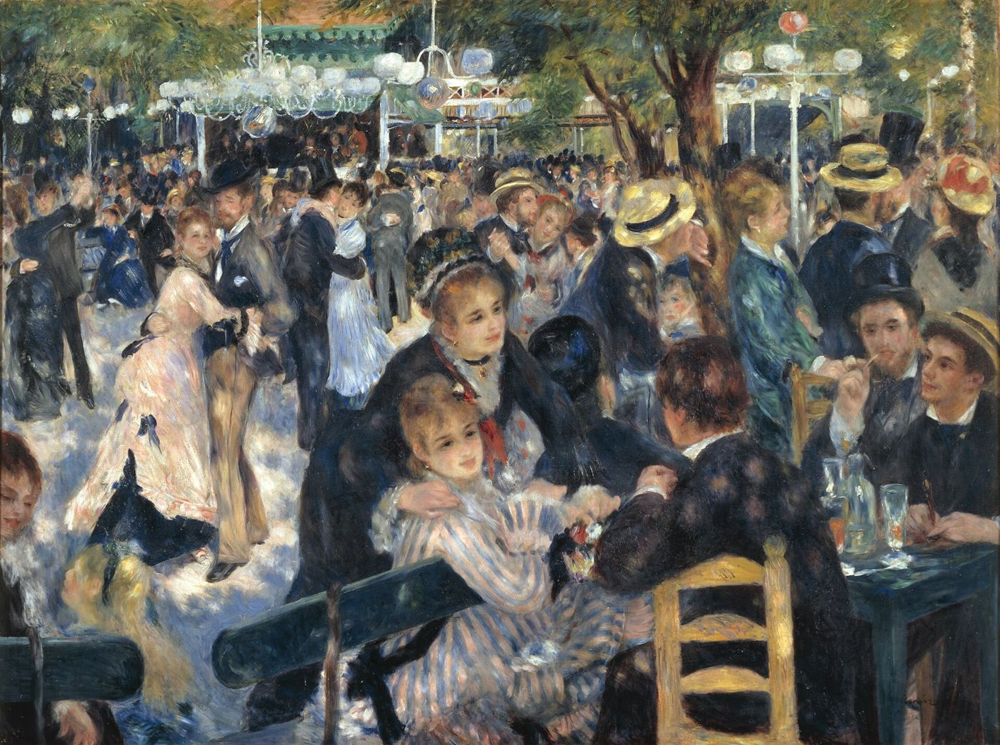
verbe
fêter son anniversaire · fêter ses 8 ans
Clique pour retourner la carte
Auguste Renoir, Bal du moulin de la Galette, 1876
fêter son anniversaire · fêter ses 8 ans
festeggiare il compleanno · i suoi 8 anni
Paolo a fêté ses 8 ans avec ses copains.
Paolo ha festeggiato i suoi 8 anni con i suoi amici.
Nous allons fêter mon anniversaire au restaurant.
Festeggeremo il mio compleanno al ristorante.
Avec un âge : fêter ses 8 ans, fêter ses 40 ans.
Con un'età: «fêter ses 8 ans».
nom féminin
la nourriture
Clique pour retourner la carte
la nourriture
il cibo
La nourriture était délicieuse et très variée.
Il cibo era delizioso e molto vario.
Paolo aime la nourriture italienne.
Paolo ama il cibo italiano.
Un seul r au début, deux r au milieu : nou-rr-iture (de nourrir).
Una «r» all'inizio, due «r» al centro: viene da «nourrir».
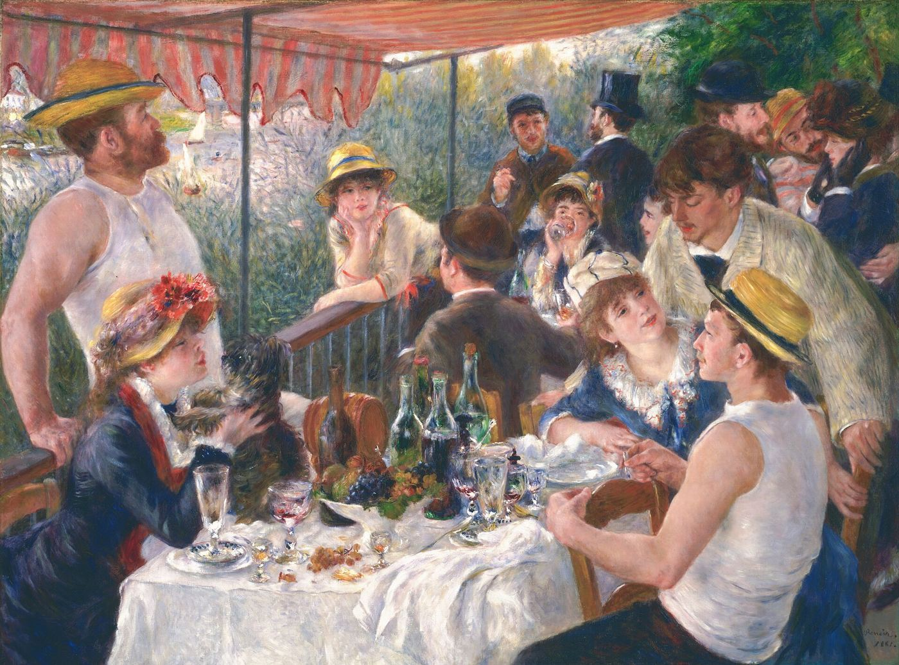
expression
nouer des amitiés
Clique pour retourner la carte
Auguste Renoir, Le Déjeuner des canotiers, 1880-1881
nouer des amitiés
stringere amicizie
En voyage, on noue facilement des amitiés.
In viaggio si stringono facilmente amicizie.
Au club d'équitation, j'ai noué de belles amitiés.
Al circolo di equitazione ho stretto belle amicizie.
nouer = faire un nœud. On dit aussi : se faire des amis.
«nouer» = fare un nodo. Si dice anche: «se faire des amis».
nom masculin
un échange d'idées
Clique pour retourner la carte
un échange d'idées
uno scambio di idee
Nos cours sont un vrai échange d'idées.
Le nostre lezioni sono un vero scambio di idee.
Après la visite, il y a eu un échange d'idées sur les tableaux.
Dopo la visita c'è stato uno scambio di idee sui quadri.
Le verbe : échanger des idées, des messages, des adresses.
Il verbo: «échanger».
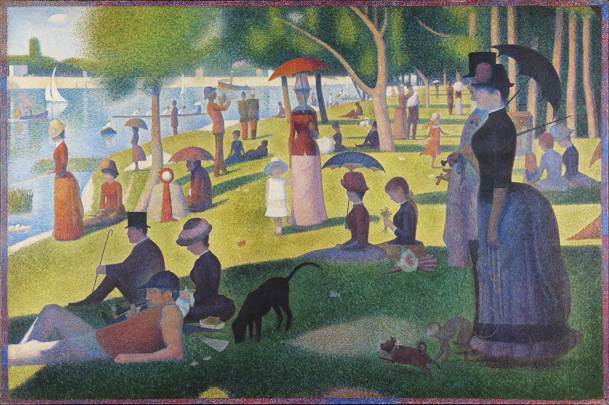
nom masculin pluriel
les loisirs
Clique pour retourner la carte
Georges Seurat, Un dimanche après-midi à l'île de la Grande Jatte, 1884-1886
les loisirs
il tempo libero · gli hobby
Mes loisirs préférés sont le dessin et l'équitation.
I miei hobby preferiti sono il disegno e l'equitazione.
Qu'est-ce que tu fais pendant tes loisirs ?
Che cosa fai nel tempo libero?
Souvent au pluriel. On dit aussi : le temps libre.
Spesso al plurale. Si dice anche: «le temps libre».
nom masculin
le chant
Clique pour retourner la carte
le chant
il canto
Paolo prend des cours de chant le mercredi.
Paolo prende lezioni di canto il mercoledì.
On entendait le chant des oiseaux.
Si sentiva il canto degli uccelli.
Le verbe : chanter. Une chanson = la canzone ; le chant = l'art de chanter.
Il verbo: «chanter». «Une chanson» = la canzone; «le chant» = l'arte del canto.
verbe
partager
Clique pour retourner la carte
partager
condividere, dividere
Nous avons partagé un gâteau au chocolat.
Abbiamo diviso una torta al cioccolato.
J'aime partager mes dessins avec mon fils.
Mi piace condividere i miei disegni con mio figlio.
Avec nous : nous partageons (on garde le e).
Con «nous»: «nous partageons» (si mantiene la «e»).
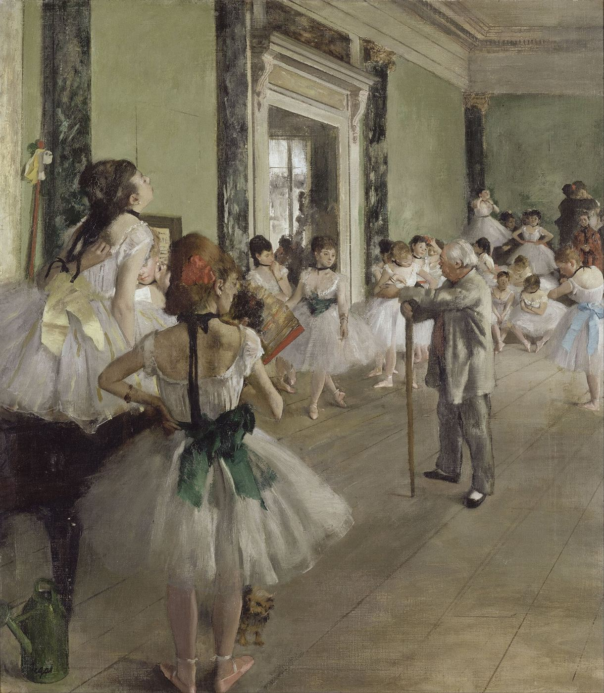
nom féminin
une séance
Clique pour retourner la carte
Edgar Degas, La Classe de danse, 1873-1876
une séance
una seduta, una sessione, uno spettacolo
Deux séances de dessin de 20 minutes chacune.
Due sessioni di disegno da 20 minuti ciascuna.
La séance de cinéma commence à 20 heures.
Lo spettacolo al cinema comincia alle 20.
On dit une séance de cinéma, de sport, de travail, chez le kiné.
Si dice: di cinema, di sport, di lavoro, dal fisioterapista.
Verbes et expressions utiles Verbi ed espressioni utili
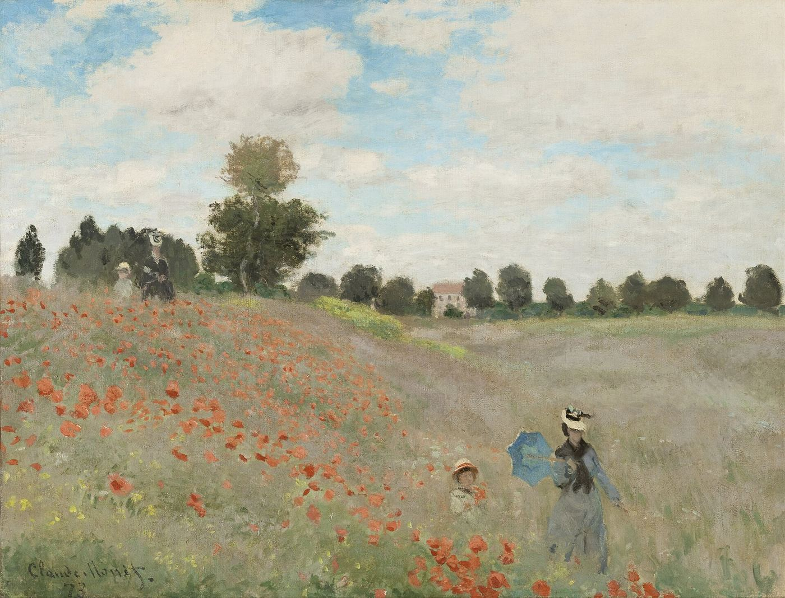
verbe
choisir · il a choisi
Clique pour retourner la carte
Claude Monet, Les Coquelicots, 1873
choisir · il a choisi
scegliere · ha scelto
Paolo a choisi un gâteau au chocolat.
Paolo ha scelto una torta al cioccolato.
Je choisis toujours les musées impressionnistes.
Scelgo sempre i musei impressionisti.
Comme finir : je choisis, nous choisissons, ils choisissent. Le nom : un choix.
Come «finir». Il nome: «un choix».
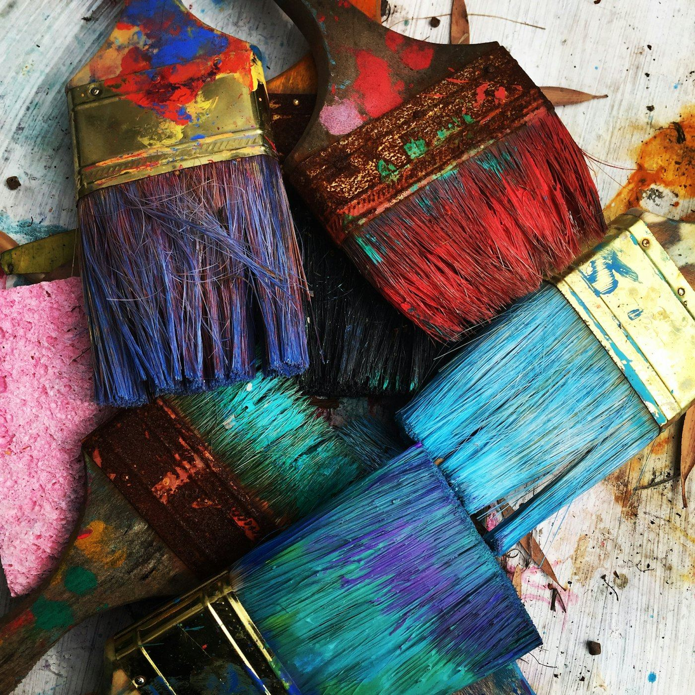
verbe
essayer (de)
Clique pour retourner la carte
Pinceaux et couleurs
essayer (de)
provare (a)
J'essaie de dessiner un cheval.
Provo a disegnare un cavallo.
Tu peux essayer cette robe ?
Puoi provare questo vestito?
essayer de + infinitif. Deux formes : j'essaie ou j'essaye.
«essayer de» + infinito. Due forme possibili.
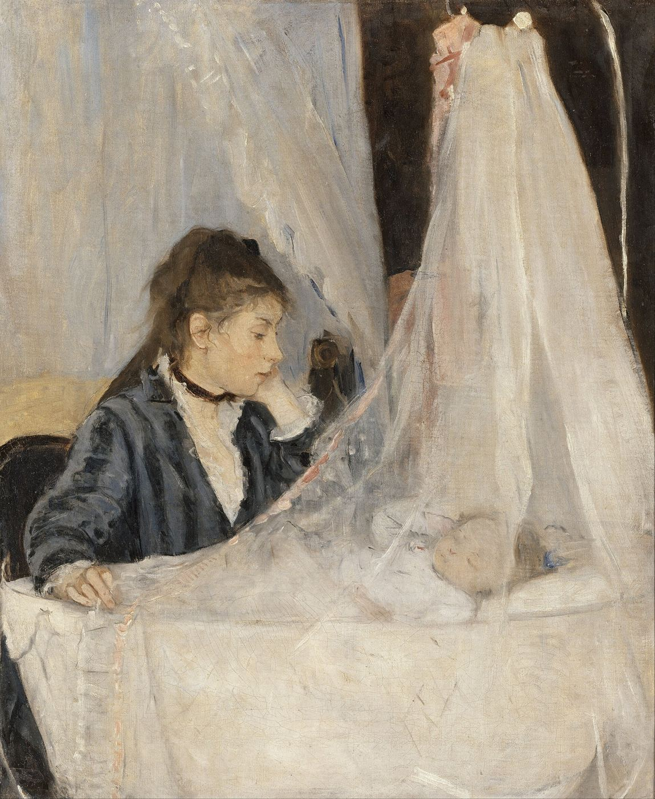
verbe pronominal
se souvenir de
Clique pour retourner la carte
Berthe Morisot, Le Berceau, 1872
se souvenir de
ricordarsi di
Je me souviens de mon premier voyage à Paris.
Mi ricordo del mio primo viaggio a Parigi.
Tu te souviens de ce petit restaurant au bord de la mer ?
Ti ricordi di quel ristorantino in riva al mare?
Toujours avec de. Comme venir : je me souviens, nous nous souvenons. Un souvenir = un ricordo.
Sempre con «de». Si coniuga come «venir».
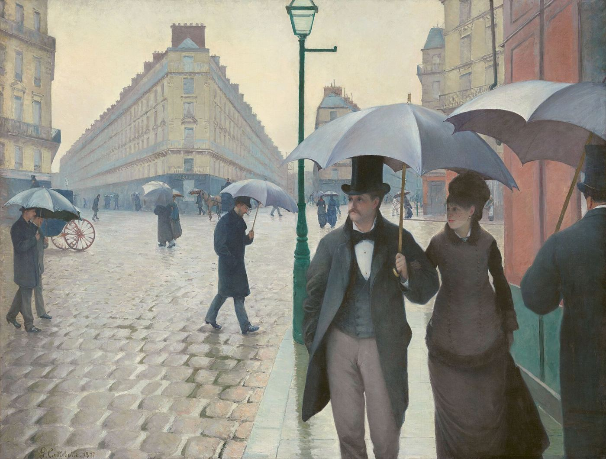
verbe
attendre
Clique pour retourner la carte
Gustave Caillebotte, Rue de Paris, temps de pluie, 1877
attendre
aspettare
On attend le bus depuis vingt minutes.
Aspettiamo l'autobus da venti minuti.
J'attends Paolo à la sortie de l'école.
Aspetto Paolo all'uscita di scuola.
Sans préposition : attendre quelqu'un. On attend = nous attendons (langage courant).
Senza preposizione. «On attend» = aspettiamo.
verbes
cibler · frapper · toucher
Clique pour retourner la carte
cibler · frapper · toucher
mirare, rivolgersi a · colpire · toccare, commuovere
Cette exposition cible les familles avec des enfants.
Questa mostra si rivolge alle famiglie con bambini.
J'ai été frappée par la lumière des tableaux de Monet.
Sono stata colpita dalla luce dei quadri di Monet.
Ce tableau m'a beaucoup touchée.
Questo quadro mi ha commossa molto.
cibler = viser un public. frapper = donner un coup, ou surprendre fortement. toucher = mettre la main, ou émouvoir.
«cibler» = mirare a un pubblico; «frapper» = colpire; «toucher» = toccare o commuovere.
expression
faire la différence
Clique pour retourner la carte
faire la différence
fare la differenza
Un bon guide fait la différence pendant une visite.
Una buona guida fa la differenza durante una visita.
Paolo ne fait pas la différence entre « le cours » et « les courses ».
Paolo non fa la differenza tra «le cours» e «les courses».
Deux sens : être important, ou distinguer deux choses.
Due significati: essere decisivo, oppure distinguere.
nom masculin
un onglet
Clique pour retourner la carte
un onglet
una scheda (del browser)
Ouvre un nouvel onglet pour chercher le musée.
Apri una nuova scheda per cercare il museo.
J'ai vingt onglets ouverts sur mon ordinateur !
Ho venti schede aperte sul computer!
Au restaurant, l'onglet est aussi un morceau de viande de bœuf.
Al ristorante, «l'onglet» è anche un taglio di manzo.
nom masculin
le polystyrène
Clique pour retourner la carte
le polystyrène
il polistirolo
Paolo a fabriqué un bateau en polystyrène.
Paolo ha costruito una barca di polistirolo.
Les boîtes en polystyrène gardent la glace au froid.
Le scatole di polistirolo tengono il gelato al freddo.
Prononciation : po-li-sti-rène, avec un y écrit.
Pronuncia: po-li-sti-rène.
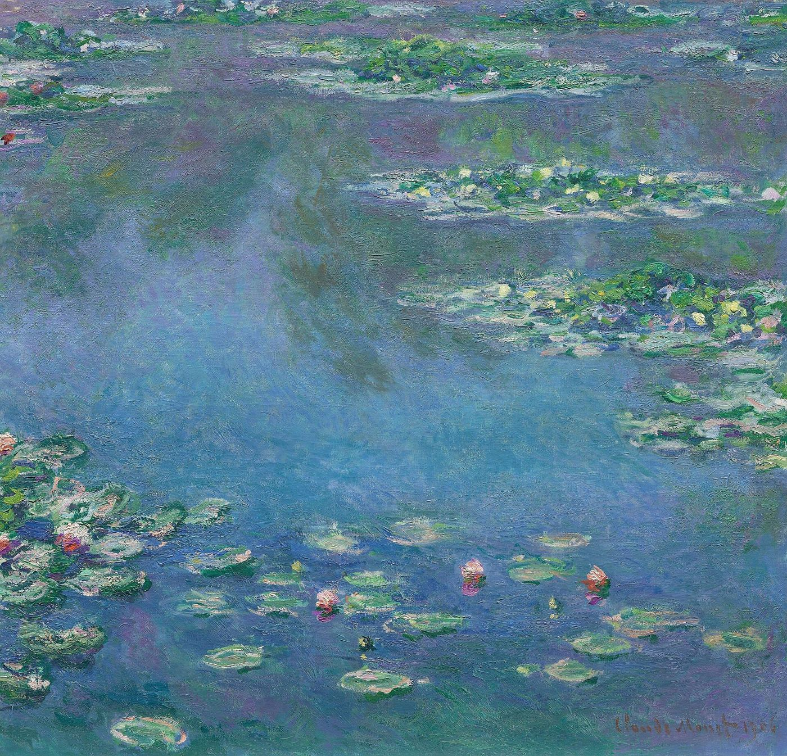
Claude Monet, Nymphéas, 1906 · Art Institute of Chicago
2
Le son [o] : le bateau, l'eau, le gâteau
Il suono [o]
Écoute et répète
Ascolta e ripeti
Le son [o] s'écrit de quatre façons : o, ô, au et eau. On le prononce avec la bouche bien ronde, comme pour faire un bisou.
Il suono [o] si scrive in quattro modi: o, ô, au, eau. Si pronuncia con la bocca ben rotonda, come per dare un bacio.
le bateau
l'eau
le gâteau
beau
le château
au revoir
chaud
la photo
le vélo
l'hôtel
Sur l'eau, il y a un beau bateau, et sur le bateau, un gros gâteau !
Sull'acqua c'è una bella barca, e sulla barca una grande torta!
Paolo a fêté ses huit ans au bord de l'eau, avec un gâteau au chocolat.
Paolo ha festeggiato i suoi otto anni in riva all'acqua, con una torta al cioccolato.
Auguste Renoir, Deux Sœurs (Sur la terrasse), 1881 · Art Institute of Chicago
3
Les points de grammaire
I punti di grammatica
Je suis allé · nous avons été
«Je suis allé» · «nous avons été»
Pour dire qu'on est allé quelque part, on utilise aller au passé composé, avec être et l'accord.
Per dire che si è andati da qualche parte, si usa «aller» al passato prossimo, con «être» e l'accordo.
Je suis allée à Paris en septembre. Paolo est allé à la piscine.
Sono andata a Parigi a settembre. Paolo è andato in piscina.
À l'oral, on entend souvent avoir été + lieu, avec le même sens. C'est un peu plus familier.
All'orale si sente spesso «avoir été» + luogo, con lo stesso significato. È un po' più familiare.
Nous avons été au musée d'Orsay. = Nous sommes allés au musée d'Orsay.
Siamo andati al museo d'Orsay.
Être allé quelque part (en général)
Pour parler d'une expérience, sans date précise :
Per parlare di un'esperienza, senza data precisa:
Tu es déjà allée en Normandie ? Non, je n'y suis jamais allée.
Sei già stata in Normandia? No, non ci sono mai stata.
Le plus beau jour a été…
Ici, a été est le passé composé de être : on fait un bilan.
Qui «a été» è il passato prossimo di «être»: si fa un bilancio.
Le plus beau jour des vacances a été la randonnée à cheval.
Il giorno più bello delle vacanze è stato l'escursione a cavallo.
Ensemble ou avec ?
«Ensemble» o «avec»?
Ensemble s'utilise seulement quand les personnes sont déjà dans le sujet, et on le place après le verbe, sans rien après.
«Ensemble» si usa solo quando le persone sono già nel soggetto, e si mette dopo il verbo, senza niente dopo.
Paolo et moi, nous dessinons ensemble.
Paolo e io disegniamo insieme.
On part ensemble ce week-end ?
Partiamo insieme questo fine settimana?
Pour dire insieme a, insieme con, on utilise avec, jamais « ensemble avec ».
Per dire «insieme a / insieme con» si usa «avec», mai «ensemble avec».
Je vais au musée avec mon amie. (et pas : ensemble avec mon amie)
Vado al museo insieme alla mia amica.
Le nom un ensemble
Un bel ensemble de tableaux. Dans l'ensemble, c'était un beau voyage.
Un bell'insieme di quadri. Nel complesso, è stato un bel viaggio.
Tutoyer ou vouvoyer ?
Dare del tu o dare del Lei?
Tutoyer quelqu'un, c'est lui dire tu. Vouvoyer, c'est lui dire vous, par politesse.
«Tutoyer» = dare del tu. «Vouvoyer» = dare del Lei (in francese si usa «vous»).
On dit tu
à la famille, aux amis, aux enfants, souvent aux collègues
alla famiglia, agli amici, ai bambini, spesso ai colleghi
Tu viens avec nous, Paolo ?
Vieni con noi, Paolo?
On dit vous
à un inconnu, au musée, au magasin, au médecin
a uno sconosciuto, al museo, al negozio, dal medico
Excusez-moi, vous savez où se trouve l'accueil ?
Mi scusi, sa dov'è la reception?
On se tutoie ? Oui, avec plaisir !
Ci diamo del tu? Sì, con piacere!
Alors que
«Alors que»
Alors que + indicatif relie deux idées. Il a deux sens.
«Alors que» + indicativo collega due idee. Ha due significati.
L'opposition = mentre, invece
J'adore la mer, alors que mon mari préfère la montagne.
Adoro il mare, mentre mio marito preferisce la montagna.
Le même moment = mentre
Il a commencé à pleuvoir alors que nous étions à la plage.
Ha cominciato a piovere mentre eravamo in spiaggia.
Comme en italien avec mentre : on regarde le sens de la phrase.
Come in italiano con «mentre»: si guarda il senso della frase.
On ne parle pas de ce qu'on gagne
Non si parla di quanto si guadagna
Cette phrase a quatre petites pièces :
Questa frase ha quattro piccoli pezzi:
La phrase en morceaux
On = les gens en général (in italiano : si).
«On» = la gente in generale (si).
ne… pas autour du verbe : on ne parle pas.
«ne… pas» attorno al verbo.
parler de quelque chose : la préposition de reste.
«parler de» qualcosa: la preposizione «de» resta.
ce que = la chose que (quello che). que devient qu' devant on.
«ce que» = quello che. «que» diventa «qu'» davanti a «on».
On ne parle pas de ce qu'on gagne.
Non si parla di quanto si guadagna.
Je ne comprends pas ce que tu dis.
Non capisco quello che dici.
Chacun · chacune
«Chacun» · «chacune»
Chacun (masculin) et chacune (féminin) = ciascuno, ciascuna. Ils sont toujours au singulier et s'accordent avec le nom.
«Chacun / chacune» = ciascuno / ciascuna. Sempre al singolare, si accordano col nome.
Deux séances de 20 minutes chacune. (une séance)
Due sessioni di 20 minuti ciascuna.
Les enfants ont reçu un cadeau chacun.
I bambini hanno ricevuto un regalo ciascuno.
Chacun fait ce qu'il veut !
Ognuno fa quello che vuole!
Devant un nom, on utilise chaque : chaque jour, chaque séance.
Davanti a un nome si usa «chaque»: ogni giorno, ogni sessione.
Le cours ou les courses ?
«Le cours» o «les courses»?
le cours
une leçon
una lezione
Mon cours de français est le lundi.
La mia lezione di francese è il lunedì.
les courses
acheter à manger
fare la spesa
Je fais les courses au marché.
Faccio la spesa al mercato.
la course
courir, une compétition
la corsa, una gara
Paolo a gagné la course !
Paolo ha vinto la corsa!
Attention : le cours s'écrit avec un s, même au singulier.
Attenzione: «le cours» si scrive con la «s» anche al singolare.
Le verbe savoir au présent
Il verbo «savoir» al presente
Savoir est irrégulier : je sais, tu sais, il sait se prononcent pareil. Au pluriel, on entend v : nous savons.
«Savoir» è irregolare. Al plurale si sente la «v».
| je sais | io so | |
| tu sais | tu sai | |
| il / elle / on sait | lui / lei sa · si sa | |
| nous savons | noi sappiamo | |
| vous savez | voi sapete · Lei sa | |
| ils / elles savent | loro sanno |
savoir + verbe
une chose apprise
una cosa imparata
Paolo sait nager. Je sais monter à cheval.
Paolo sa nuotare. So andare a cavallo.
savoir + que, où, si…
une information
un'informazione
Tu sais où est le musée ? Je sais qu'il est fermé le lundi.
Sai dov'è il museo? So che è chiuso il lunedì.
Participe passé : su. J'ai su la nouvelle hier.
Participio passato: «su». Ho saputo la notizia ieri.
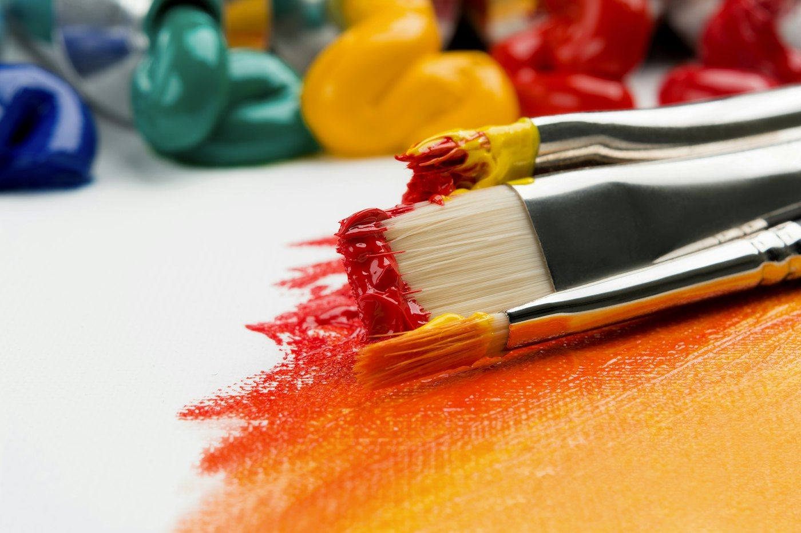
Le plaisir de peindre · Photographie
4
Je m'entraîne
Mi esercito
1
VOCABULAIRE
Complète chaque phrase avec un mot de la liste. Attention à la forme du verbe !
Completa ogni frase con una parola della lista. Attenzione alla forma del verbo!
se baignerla nourritureune randonnéel'accueilongletpolystyrènenoueréchangechantloisirs
1
Demande la clé de la chambre à de l'hôtel.
Chiedi la chiave della camera alla reception dell'albergo.
✓ Demande la clé de la chambre à l'accueil de l'hôtel.
2
L'eau est trop froide, je ne vais pas aujourd'hui.
L'acqua è troppo fredda, oggi non faccio il bagno.
✓ L'eau est trop froide, je ne vais pas me baigner aujourd'hui.
3
Dans ce petit village, est simple mais délicieuse.
In questo paesino, il cibo è semplice ma delizioso.
✓ Dans ce petit village, la nourriture est simple mais délicieuse.
4
Samedi, nous avons fait à cheval dans la forêt.
Sabato abbiamo fatto un'escursione a cavallo nella foresta.
✓ Samedi, nous avons fait une randonnée à cheval dans la forêt.
5
Ouvre un nouvel pour réserver les billets du musée.
Apri una nuova scheda per prenotare i biglietti del museo.
✓ Ouvre un nouvel onglet pour réserver les billets du musée.
6
Pour le bricolage, Paolo a besoin de et de colle.
Per il bricolage, Paolo ha bisogno di polistirolo e di colla.
✓ Pour le bricolage, Paolo a besoin de polystyrène et de colle.
7
En voyage, j'aime des amitiés avec les gens du pays.
In viaggio mi piace stringere amicizie con la gente del posto.
✓ En voyage, j'aime nouer des amitiés avec les gens du pays.
8
La visite s'est terminée par un d'idées sur les impressionnistes.
La visita si è conclusa con uno scambio di idee sugli impressionisti.
✓ La visite s'est terminée par un échange d'idées sur les impressionnistes.
9
Mon fils prend des cours de à l'école de musique.
Mio figlio prende lezioni di canto alla scuola di musica.
✓ Mon fils prend des cours de chant à l'école de musique.
10
Le dessin et l'équitation sont mes préférés.
Il disegno e l'equitazione sono i miei hobby preferiti.
✓ Le dessin et l'équitation sont mes loisirs préférés.
2
GRAMMAIRE
Clique sur la bonne réponse.
Clicca sulla risposta giusta.
1
Paolo et moi, nous allons au musée ______ .
Paolo e io andiamo al museo insieme.
✓ Paolo et moi, nous allons au musée ensemble.
2
Je vais au cinéma ______ mon amie Laura.
Vado al cinema con la mia amica Laura.
✓ Je vais au cinéma avec mon amie Laura.
3
Au musée, à un gardien : « Excusez-moi, ______ savez où sont les Monet ? »
Al museo, a un custode: «Mi scusi, sa dove sono i Monet?»
✓ Excusez-moi, vous savez où sont les Monet ?
4
À Paolo : « ______ veux une glace ? »
A Paolo: «Vuoi un gelato?»
✓ Tu veux une glace ?
5
J'adore la mer, ______ mon mari préfère la montagne.
Adoro il mare, mentre mio marito preferisce la montagna.
✓ J'adore la mer, alors que mon mari préfère la montagne.
6
Trois séances de 20 minutes ______ .
Tre sessioni da 20 minuti ciascuna.
✓ Trois séances de 20 minutes chacune.
7
______ jour, je dessine un peu.
Ogni giorno disegno un po'.
✓ Chaque jour, je dessine un peu.
8
Ce soir, je fais ______ au supermarché.
Stasera faccio la spesa al supermercato.
✓ Ce soir, je fais les courses au supermarché.
9
Mon ______ de français commence à 18 heures.
La mia lezione di francese comincia alle 18.
✓ Mon cours de français commence à 18 heures.
10
Je ne comprends pas ______ tu dis.
Non capisco quello che dici.
✓ Je ne comprends pas ce que tu dis.
11
Tu es déjà ______ au Louvre ?
Sei già stata al Louvre?
✓ Tu es déjà allée au Louvre ?
12
Quel mot n'a pas le son [o] ?
Quale parola non ha il suono [o]?
✓ la nourriture : « ou » se prononce [u].
3
VERBES
Conjugue le verbe au temps demandé.
Coniuga il verbo al tempo richiesto.
1
Je (savoir, présent) monter à cheval depuis l'âge de dix ans.
So andare a cavallo da quando avevo dieci anni.
✓ Je sais monter à cheval depuis l'âge de dix ans.
2
Vous (savoir, présent) à quelle heure ouvre le musée ?
Sa a che ora apre il museo?
✓ Vous savez à quelle heure ouvre le musée ?
3
Les enfants (savoir, présent) déjà nager.
I bambini sanno già nuotare.
✓ Les enfants savent déjà nager.
4
Pour son anniversaire, Paolo (choisir, passé composé) un gâteau au chocolat.
Per il suo compleanno, Paolo ha scelto una torta al cioccolato.
✓ Pour son anniversaire, Paolo a choisi un gâteau au chocolat.
5
Nous (choisir, présent) toujours un hôtel près de la mer.
Scegliamo sempre un albergo vicino al mare.
✓ Nous choisissons toujours un hôtel près de la mer.
6
Hier, nous (se baigner, passé composé) dans une eau turquoise.
Ieri abbiamo fatto il bagno in un'acqua turchese.
✓ Hier, nous nous sommes baignés dans une eau turquoise.
7
Tu (se souvenir, présent) de notre voyage en Provence ?
Ti ricordi del nostro viaggio in Provenza?
✓ Tu te souviens de notre voyage en Provence ?
8
J'(essayer, présent) de peindre comme Monet !
Provo a dipingere come Monet!
✓ J'essaie de peindre comme Monet !
9
Le plus beau jour du voyage (être, passé composé) la visite de Giverny.
Il giorno più bello del viaggio è stato la visita di Giverny.
✓ Le plus beau jour du voyage a été la visite de Giverny.
4
TEXTE À CONJUGUER
L'anniversaire de Paolo : mets les verbes au bon temps.
Il compleanno di Paolo: metti i verbi al tempo giusto.
Lis tout le texte une première fois. Puis conjugue chaque verbe au bon temps.
Leggi tutto il testo una prima volta. Poi coniuga ogni verbo al tempo giusto.
Traduction du texte
Il mese scorso, Paolo ha festeggiato i suoi otto anni in riva al mare. Faceva bellissimo e l'acqua era calma come una piscina. La mattina abbiamo fatto il bagno tutti insieme. Il pomeriggio, Paolo ha scelto una grande torta al cioccolato e i suoi amici hanno diviso le caramelle. Io ho disegnato una barca sul biglietto di compleanno. La sera siamo andati al porto per vedere il tramonto. Oggi Paolo si ricorda ancora di quella giornata. L'anno prossimo andremo a festeggiare i suoi nove anni a Parigi, al museo d'Orsay!
5
TRADUCTION
Traduis en français. Puis regarde la correction et dis honnêtement si tu avais juste.
Traduci in francese. Poi guarda la correzione e di' onestamente se era giusto.
1
Sono andata a Parigi per vedere i quadri di Monet.
✓ Je suis allée à Paris pour voir les tableaux de Monet.
2
Mio figlio e io disegniamo insieme la domenica.
✓ Mon fils et moi, nous dessinons ensemble le dimanche.
3
Ci diamo del tu?
✓ On se tutoie ?
4
Adoro i musei, mentre mio figlio preferisce la piscina.
✓ J'adore les musées, alors que mon fils préfère la piscine.
5
In Francia non si parla di quanto si guadagna.
✓ En France, on ne parle pas de ce qu'on gagne.
6
Due lezioni da trenta minuti ciascuna.
✓ Deux cours de trente minutes chacun.
7
Questo quadro mi ha commossa molto.
✓ Ce tableau m'a beaucoup touchée.
8
Ti ricordi della nostra escursione a cavallo?
✓ Tu te souviens de notre randonnée à cheval ?
6
RÉFLEXION · FACULTATIF
Un sujet d'actualité, pour en parler à la prochaine leçon.
Un tema d'attualità, per parlarne alla prossima lezione.
Facultatif · Opzionale
Si tu as envie, réfléchis à ce sujet. Nous en parlerons ensemble au début de notre prochaine leçon.
Se ne hai voglia, rifletti su questo argomento. Ne parleremo insieme all'inizio della prossima lezione.
Les enfants et les écrans : faut-il limiter le temps d'écran ?
En France, une commission d'experts a recommandé en 2024 de ne pas exposer les enfants aux écrans avant 3 ans, et de ne pas leur donner de smartphone avant 11 ans.
In Francia, una commissione di esperti ha raccomandato nel 2024 di non esporre i bambini agli schermi prima dei 3 anni e di non dare loro uno smartphone prima degli 11 anni.
Dans beaucoup d'écoles, les téléphones portables sont interdits. Mais les écrans sont aussi un outil pour apprendre, dessiner ou parler avec la famille qui vit loin.
In molte scuole i telefoni cellulari sono vietati. Ma gli schermi sono anche uno strumento per imparare, disegnare o parlare con la famiglia che vive lontano.
Pour trouver tes idées
- Combien de temps Paolo passe-t-il devant un écran ? Et toi ?Quanto tempo passa Paolo davanti a uno schermo? E tu?
- Quels sont les avantages des écrans pour un enfant ? Et les dangers ?Quali sono i vantaggi degli schermi per un bambino? E i pericoli?
- À quel âge un enfant peut-il avoir son propre téléphone, à ton avis ?A che età un bambino può avere il suo telefono, secondo te?
Pour organiser ton texte
IntroductionAujourd'hui, les enfants… Faut-il…
Présente le sujet et pose la question.
Presenta l'argomento e poni la domanda.
DéveloppementD'un côté… De l'autre… Par exemple, Paolo…
D'un côté, les avantages. De l'autre, les risques. Donne un exemple avec Paolo.
Da un lato i vantaggi, dall'altro i rischi. Fai un esempio con Paolo.
ConclusionEn conclusion, à mon avis… Chez nous, …
Donne ton avis et une règle simple pour ta famille.
Dai la tua opinione e una regola semplice per la tua famiglia.
Mots utiles (clique pour les ajouter)
Voir un exemple de texte
Aujourd'hui, les enfants grandissent avec les écrans. Faut-il limiter leur temps d'écran ? D'un côté, une tablette peut être utile : on peut apprendre, regarder des tableaux impressionnistes ou appeler la famille qui vit loin. De l'autre, trop d'écrans fatiguent les yeux et empêchent de jouer dehors, alors que les enfants ont besoin de bouger et d'inventer. Par exemple, quand Paolo dessine avec moi, il est plus calme et plus créatif que devant un jeu vidéo. En conclusion, à mon avis, il ne faut pas tout interdire, mais il faut des règles claires : chez nous, pas d'écran pendant les repas, et le week-end, on choisit ensemble une sortie au musée ou à la mer.
Oggi i bambini crescono con gli schermi. Bisogna limitare il loro tempo davanti agli schermi? Da un lato, un tablet può essere utile: si può imparare, guardare quadri impressionisti o chiamare la famiglia che vive lontano. Dall'altro, troppi schermi affaticano gli occhi e impediscono di giocare fuori, mentre i bambini hanno bisogno di muoversi e di inventare. Per esempio, quando Paolo disegna con me, è più calmo e più creativo che davanti a un videogioco. In conclusione, secondo me, non bisogna vietare tutto, ma servono regole chiare: da noi, niente schermi durante i pasti e, nel fine settimana, scegliamo insieme un'uscita al museo o al mare.
Auguste Renoir, Bal du moulin de la Galette, 1876 · Musée d'Orsay, Paris
★
À revoir
Da ripassare
Clique sur le lien pour relire la règle ou le mot, puis écoute la bonne réponse et répète-la.
Clicca sul link per rileggere la regola o la parola, poi ascolta la risposta giusta e ripetila.
Pas encore d'erreur. Les points à revoir apparaissent ici quand tu fais les exercices.
| Ex. | La bonne réponse | Ma réponse | À revoir |
|---|